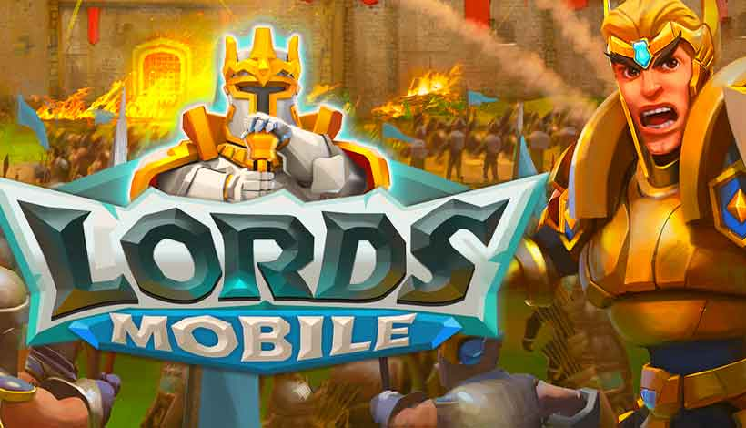
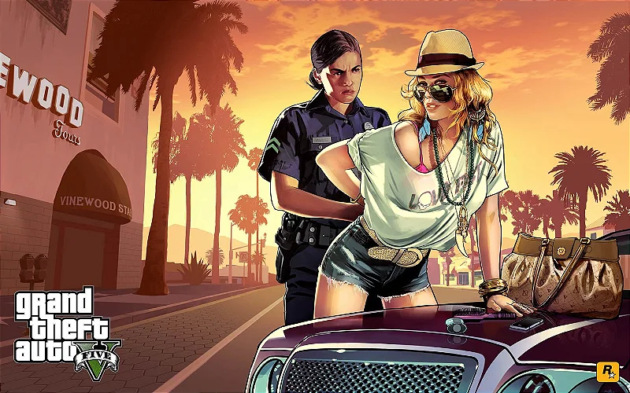
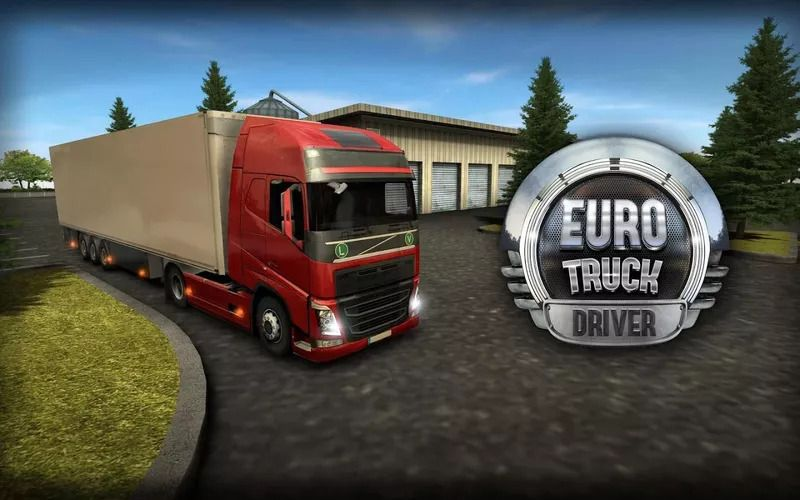
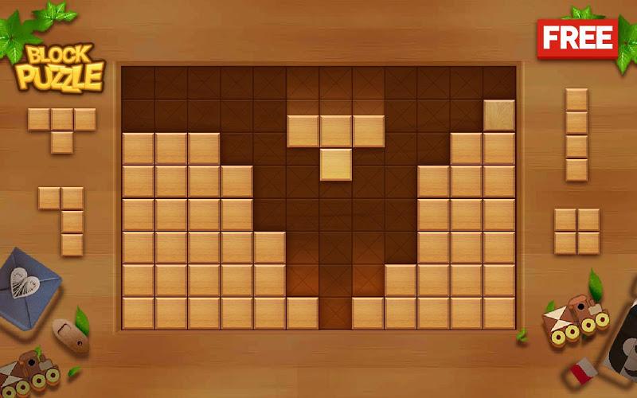

O foco principal em jogos de estratégia é deixar que os jogadores usem estratégias ou táticas para chegar a um objetivo ou na vitória. É comum esses jogos te darem tempo para pensar na sua próxima jogada (em turnos), mas existem também aqueles de estratégia misturados com ação em tempo real.

AÇÃO E AVENTURA:
Um jogo eletrônico de ação é um tipo de jogo eletrônico que desafia a velocidade, reflexo e raciocínio rápido do jogador. Jogos de ação geralmente incluem conflitos estratégicos, desafios de exploração e necessidade de solucionar quebra-cabeças simples, mas estes não são elementos que definem tal gênero.

RPG (Role Playing Game)
Do inglês, a sigla RPG significa "Role Playing Game", um jogo de interpretar papéis. Neste caso o jogador não é apenas um pino andando em casas de um tabuleiro, ele interpreta um personagem, com emoções, falas e habilidades enquanto atravessa um mundo fantástico.
SIMULAÇÃO:
A principal característica dos jogos de simulação é a de simular atividades da vida real, muitos desses jogos deixam você livre para explorar as principais mecânicas do game sem prender muito à missões ou história.

PUZZLE:
Jogos puzzle exigem que os jogadores busquem soluções para resolver enigmas. A mecânica desse gênero pode ser bastante variada, e se estende desde a resolução de problemas de lógica até perguntas diversas.

ESPORTES:
Os esports são categorias esportivas nas quais racicíonio, estratégia, velocidade, habilidade, destreza, controle emocional, processamento de várias informações ao mesmo tempo, comunicação e trabalho em equipe possuem papel fundamental. O atleta necessita estar em pleno funcionamento mental e físico para desempenhar.